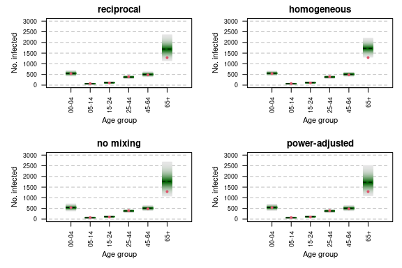

Long-term forecasts of age-stratified norovirus incidence in Berlin
Sebastian Meyer
2018-09-03
Source:vignettes/extra/BNV_addon.Rmd
BNV_addon.Rmdoptions(digits = 4) # for more compact numerical outputs
library("surveillance")
library("hhh4contacts")In this vignette, we assess long-term forecasts of the “hhh4” models from vignette("BNV") using:
library("hhh4addon")This package is developed by Johannes Bracher and available from https://github.com/jbracher/hhh4addon.
Models
We rerun the code from the vignette("BNV") to make the models available:
rmarkdown::render(system.file("doc", "BNV.Rmd", package = "HIDDA.forecasting"),
run_pandoc = FALSE, envir = BNV <- new.env(), quiet = TRUE)(MODELS <- names(BNV$fits))## [1] "reciprocal" "homogeneous" "no mixing" "power-adjusted"NMODELS <- length(MODELS)Predictive distributions
predmoms <- lapply(BNV$fits, predictive_moments, t_condition = 208, lgt = 52,
return_Sigma = TRUE)
## illustration for age group 00-04
.group <- 1
par(mfrow = n2mfrow(NMODELS), mar = c(5,5,2,1), las = 1)
invisible(mapply(fanplot_prediction, predmoms, main = names(predmoms),
MoreArgs = list(unit = .group, xlab = "Time", ylim = c(0, 55),
mean_col = "white", mean_lty = 1,
l.col = NA, pt.col = 1, pt.cex = 0.4)))
Scaled Dawid-Sebastiani scores of these multivariate forecast distributions:
sapply(predmoms, ds_score_hhh4, detailed = TRUE)## reciprocal homogeneous no mixing power-adjusted
## dawid_sebastiani 960.565 976.217 949.264 952.769
## term1 665.653 683.733 672.584 664.479
## term2 294.911 292.484 276.679 288.289
## scaled_dawid_sebastiani 1.539 1.564 1.521 1.527
## determinant_sharpness 1.067 1.096 1.078 1.065Final size forecasts (aggregate over time)
aggr <- matrix(rep(diag(BNV$NGROUPS), 52), nrow = BNV$NGROUPS,
dimnames = list(BNV$GROUPS, NULL))
predmoms_aggr <- lapply(predmoms, aggregate_moments, aggregation_matrix = aggr)
par(mfrow = n2mfrow(NMODELS), mar = c(5,5,2,1), las = 2, cex.axis = 0.8)
invisible(mapply(plot_moments_by_unit, predmoms_aggr, main = names(predmoms_aggr),
MoreArgs = list(xlab = "Age group", ylim = c(0, 3000),
pt.col = 2, pt.cex = 0.6)))
Scaled Dawid-Sebastiani scores of these multivariate forecast distributions:
sapply(predmoms_aggr, ds_score_hhh4, detailed = TRUE)## reciprocal homogeneous no mixing power-adjusted
## dawid_sebastiani 49.178 50.454 48.794 48.849
## term1 42.094 40.711 44.908 43.653
## term2 7.084 9.743 3.886 5.196
## scaled_dawid_sebastiani 4.098 4.205 4.066 4.071
## determinant_sharpness 3.508 3.393 3.742 3.638